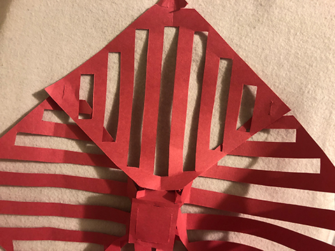

The fastener and design created using square construction paper.
The design is the inspiration from the Chinese lantern. First, I outline the shape and cut the line on paper.
Then, I used the Exacto knife to chase the line. For the fastener, I got inspiration from the Asian restaurant take-out box.
It's very secure and tight together. So, I have two papers for the insert fastener, and two papers to go through the fastener for locking up.
IIn the end, I created a cube with the same fastener to lock four papers on the top and a square shape for the bottom.
The images below are the final product of the design and fastener.